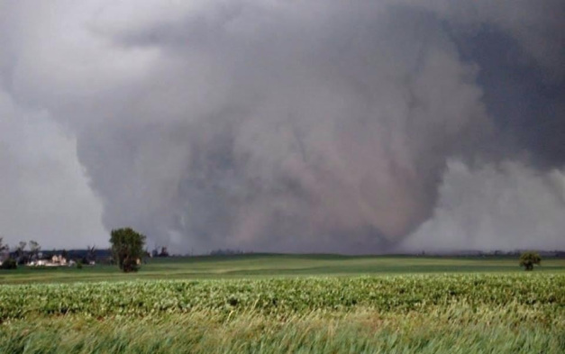

2013 El-Reno, OK tornado">
2013 El-Reno, OK Tornado
A supercell, unlike a regular ole thunderstorm, contains the most-important ingredient in the making of a tornado: a spinning column of air at its center, called a vortex. As a supercell grows in size, the vortex in the middle will begin to tilt, siphoning warm air and moisture upward and spewing out cold dry air toward the ground. The updraft of warm air causes the vortex to swell with water vapor, creating a spiraling funnel cloud at its center—the first visible sign that a tornado is brewing. The cool downdraft of air then battles the funnel cloud’s upward spiral, focusing the cloud into a smaller area and increasing its speed. With enough pressure and weight from the downdraft of cool air, the quickening funnel cloud is forced to touch down on the ground, and a tornado is officially born. https://www.britannica.com/story/how-do-tornadoes-form Original article